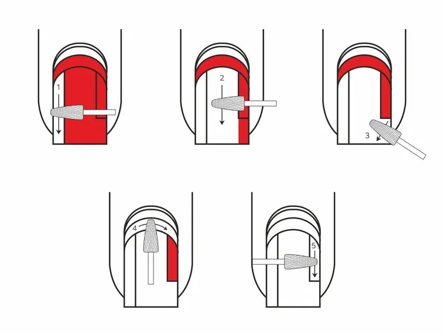
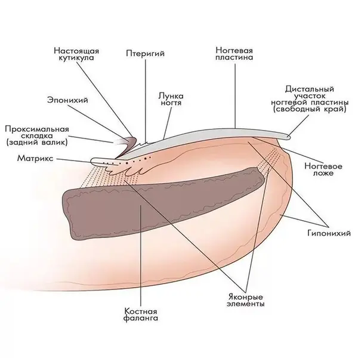

Курс – для мастеров маникюра, которые хотят снимать кутикулу аппаратом и уверенно работать с разными типами кожи: нормальной, чувствительной, грубой, влажной.
Моя авторская техника аппаратного маникюра без режущих инструментов на любой кутикуле даст вам преимущество, ведь это редкий навык.
А клиенты, когда распробуют, уже не захотят возвращаться к режущим инструментам и будут искать именно вас - мастеров, владеющих аппараткой в совершенстве.
В мини-группах ученики получают максимум внимания. Выдаю подробное учебное пособие и шпаргалки, благодаря которым в самостоятельной отработке вы не пропустите ни один этап.
Что вы получите от курсов?
Выжимку опыта, собранного за 7+ лет из десятков курсов повышения квалификации, из тестирования разных видов инструментов, из практики на сотнях клиентов.
Преподаватель
Антонина Кения
Специалист по аппаратному маникюру на любой кутикуле, победитель конкурсов по маникюру, преподаватель, мастер с высоким прайсом и опытом более 8 лет.
Как выбрать аппарат: мощность, обороты, важные параметры
Срок службы и обработка фрез;
Расходники: что нужно всегда иметь под рукой
МОДУЛЬ 2. Теория. Преимущества и мифы об аппаратном маникюре
Аппаратка VS комби. Плюсы и минусы
Мифы об аппаратном маникюре
Моя техника: из чего она состоит и почему работает
Какие обороты выставить на разных этапах обработки
МОДУЛЬ 3. Техника выполнения аппаратного маникюра
Подготовка рабочего места и клиента
Раскрытие кармана
Работа по коже: валики, пазухи, синусы, юбочка
Работа по ногтю; счищаем птеригий
Срез кутикулы фрезой+полировка
Урок: Маникюр без покрытия (пошагово, с пояснениями)
Урок: Маникюр с покрытием (последовательность, нюансы)
МОДУЛЬ 4. Типы кутикулы и кожи
Как определить тип кутикулы
Как работать с разными типами кожи: грубая, нормальная, чувствительная
Частые ошибки в технике: кутикула «падает» на ноготь, недорезанные куски
МОДУЛЬ 5. Практика
Нормальный тип кожи
Чувствительный тип кожи
Грубая кожа
Влажная кожа
Не эластичная кожа
Работа с заусенцами
Разрывы в синусах
Налипшая кутикула
Двойная кутикула
МОДУЛЬ 6. Себестоимость и материалы
Что входит в себестоимость процедуры
Где покупать материалы, чтобы не переплачивать
Как посчитать прибыль и окупаемость
Как проходит онлайн-обучение
Онлайн-курс по аппаратному маникюру
Кому-то легче освоить технику онлайн, когда можно в спокойной обстановке смотреть уроки в макро-сьемке, где все четко видно. Вы можете перематывать, повторять материал до тех пор, пока не получится.
В процессе обучения вы получаете не только практические навыки, но большой массив теоретических знаний. Методичка с наглядными схемами и подробным описанием останется у ученика после курса, чтобы всегда была возможность освежить знания

Схема снятия покрытия
1. Счистите покрытие с левой боковой стенки ногтя;
2. Переходите к снятию с середины ногтя;
3. Разверните фрезу по диагонали и смахните материал с правого уголка ногтя. Это важная деталь! Если пропустите этот этап, фреза будет цеплять торец ногтя;
4. Поверните фрезу вертикально, носиком по направлению к кутикуле и счищайте покрытие слева направо короткими стяжками «на сглаживание»;
5. Разверните фрезу носиком вправо и снимите материал вдоль боковых пазух сверху вниз, так же, движениями «на сглаживание».

Строение кожи и ногтей
Матрикс – корневая часть ногтевой пластины, находящаяся под кожей. Там зарождаются клетки эпидермиса и ногтевая пластина формируется. Матрикс состоит из живых эпителиальных клеток – онихобластов. Они очень интенсивно питаются кровью, постоянно делятся и роговеют, образуя белок кератин, из которого и состоит омертвевшая часть пластины.
Лунула - белый полукруг, видимый на пластине у нижнего валика, является продолжением матрикса. Это уязвимая, мягкая часть ногтевой пластины, в которой рожденные матриксом онихобласты растут и набирают кератин.
Мастер маникюра должен избегать давления любым инструментом при работе в этой зоне, внимательно следить за положением фрезы – даже небольшая травма может привести к деформациям и дистрофии ногтевой пластинки.
Отзывы учеников
Отзывы об обучении у Антонины ученики оставляют на Яндекс Картах.
Если вам удобнее учиться вживую, Антонина проводит очные курсы в мини-группах по 2 человека или индивидуально. Практика – на руке-тренажёре и на моделях, каждому ученику – методичка.
Базовый курс по маникюру (для новичков)45 000 руб. в группе
В программу курса входит:
пути развития мастера маникюра;
строение кожи и ногтей;
болезни кожи и ногтей;
дезинфекция и стерилизация, нормы СанПиН;
необходимые материалы, инструменты и оборудование;
организация рабочего места;
правила работы с аппаратом;
техники комбинированного и аппаратного маникюра;
архитектура ногтей, опил самых популярных видов форм;
Каждому ученику выдается авторское учебное пособие с подробным описанием всего пройденного материала, а так же шпаргалки, которые помогут не пропустить ни один этап при самостоятельной отработке.
Вы получите максимум внимания, индивидуальный подход.
Аппаратный маникюр для всех типов кожи. Level 11 день · 13 000 руб. в группе, 18 000 руб. индивидуально
Для мастеров, которые хотят научиться удалять аппаратом ЛЮБУЮ кутикулу!
Для тех, кто устал носить ножницы/кусачки в заточку. Когда освоите аппаратку, режущие инструменты вам больше не понадобятся!
Необходим опыт регулярной работы с аппаратом от 3-х месяцев.
Тайминг:
10.00-11.00 - теория
11.00-12.00 - отработка на руке-тренажере
12.00-13.30 - первая модель
13.30-14.00 - перерыв
14.00-15.30 - вторая модель
15.30-16.00 - перерыв
16.00-17.30 - третья модель
Далее - ответы на вопросы, лайфхаки, мои секреты работы.
В теоретическом блоке вы узнаете:
Преимущества аппаратного маникюра;
Необходимый набор фрез, с указанием артикулов и информации, где я их приобретаю;
Типы кутикул и различные техники аппаратного среза, подходящие для того или иного типа;
Подробное описание процесса аппаратного маникюра;
Особенности работы с нестандартными случаями (детская или очень мягкая ногтевая пластина, грубые валики, влажная кожа)
На практике вас ждёт:
Отработка аппаратного среза на разных типах кутикул (3-4 модели);
Подбор фрезы для среза с учетом типа кутикулы модели;
Работа под чутким контролем инструктора.
В конце курса будет время для обсуждения интересующих вас моментов. Вы можете заранее подготовить список вопросов (может у вас есть какие-то проблемы с покрытием, формой, дизайнами и т.д.). С удовольствием поделюсь своим опытом на любую тему, касающуюся работы мастера маникюра.
Методичка в подарок.
Аппаратный маникюр с покрытием. Level 213 000 руб. в группе, 18 000 руб. индивидуально
Для кого этот курс?
Подойдёт тем, кто владеет аппаратным маникюром, но хочет повысить свою квалификацию;
Для тех, кто уже прошёл Level 1 и хочет овладеть всей техникой - от снятия покрытия до дизайна;
Для тех, кто хочет узнать все секреты работы Антонины Кения, собранные за время обучений, практики и конкурсов.
Тайминг:
10.00-11.00 - теория
11.00-12.00 - отработка на руке-тренажере
12.00-12.30 - перерыв
12.30-17.00 - практика на модели
17.00-18.00 - ответы на вопросы
В теоретическом блоке:
Вы узнаете, какие оборудование, материалы и инструменты я использую, с указанием артикулов и информации, где их приобрести;
Объясню схему снятия покрытия, построения правильной архитектуры ногтя базой/гелем, опил формы, покрытия цветом и топом;
Обсудим, какие у вас основные проблемы в маникюре и как их исправить;
Вам будет предоставлена методичка, с подробным описанием каждого этапа маникюра.
На практике вас ждёт:
Отработка на модели;
Снятие покрытия так, чтобы клиенту не «пекло», максимально равномерно;
Выравнивание базой/гелем без наплывов, тонко, но крепко;
Опил форм «квадрат» и «миндаль»;
Покрытие цветом под кутикулу;
Покрытие глянцевым/матовым топом;
Попробуем простые дизайны на выбор: стемпинг, слайдеры, блестки, стразы и т.п.
Методичка в подарок
Двухдневный курс Level 1 + Level 220 000 руб. в группе, 32 000 руб. индивидуально
Аппаратный педикюр с обработкой стопы дисками13 000 руб. в группе, 18 000 руб. индивидуально
Программа:
Оборудование, инструменты и косметика: всё, что я использую во время педикюра с ссылками, ценами и артикулами;
Противопоказания и главные отличия от маникюра. Разбираем, как не навредить;
Обработка стопы дисками. Универсальная техника, позволяющая справиться даже с чрезмерно ороговевшими пятками;
Обработка трещин. Научу «раскрывать» и заглаживать трещины диском;
Аппаратная обработка пальчиков. Без режущих;
Тампонада вросшего ногтя. Работа с каполином;
Покрытие;
Себестоимость процедуры. Ваш прайс больше не будет прежним!